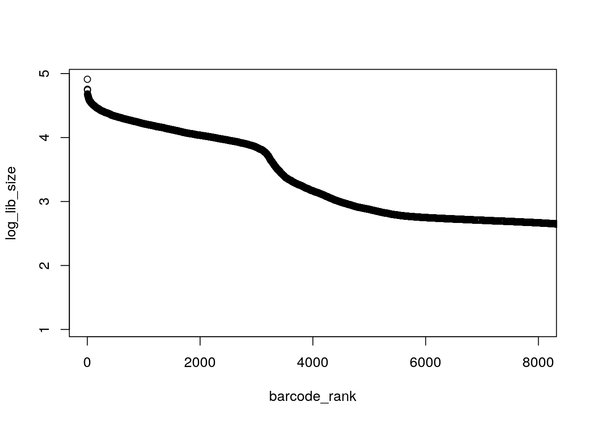
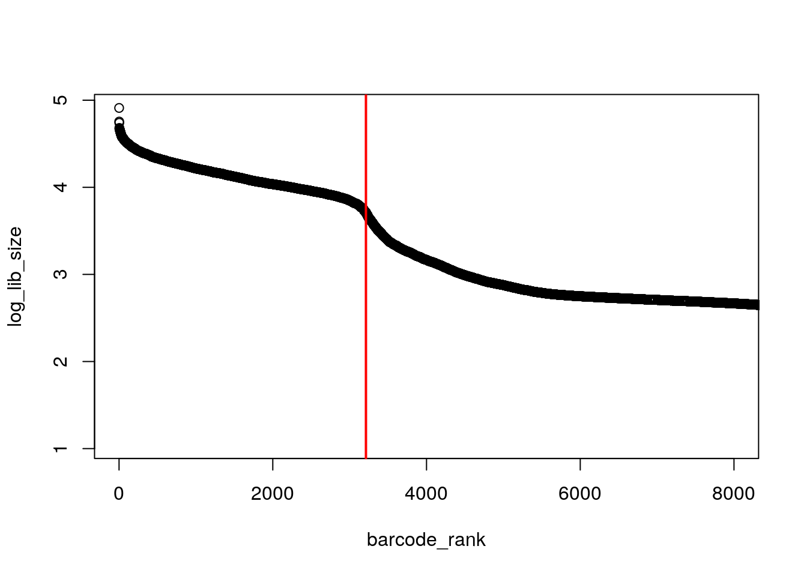
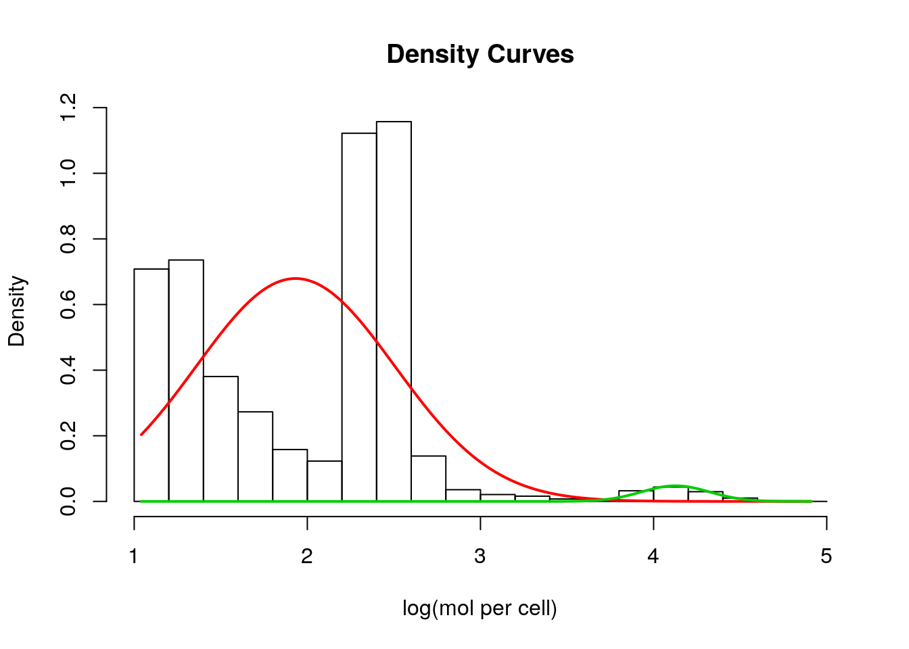

3 Processing Raw scRNA-seq Data
3.1 FastQC
Once you’ve obtained your single-cell RNA-seq data, the first thing you need to do with it is check the quality of the reads you have sequenced. For this task, today we will be using a tool called FastQC. FastQC is a quality control tool for sequencing data, which can be used for both bulk and single-cell RNA-seq data. FastQC takes sequencing data as input and returns a report on read quality. Copy and paste this link into your browser to visit the FastQC website:
https://www.bioinformatics.babraham.ac.uk/projects/fastqc/
This website contains links to download and install FastQC and documentation on the reports produced. Fortunately we have already installed FastQC for you today, so instead we will take a look at the documentation. Scroll down the webpage to ‘Example Reports’ and click ‘Good Illumina Data’. This gives an example of what an ideal report should look like for high quality Illumina reads data.
Now let’s make a FastQC report ourselves.
Today we will be performing our analysis using a single cell from an mESC dataset produced by (Kolodziejczyk et al. 2015). The cells were sequenced using the SMART-seq2 library preparation protocol and the reads are paired end. The files are located in Share.
Note The current text of the course is written for an AWS server for people who attend our course in person. You will have to download the files (both ERR522959_1.fastq and ERR522959_2.fastq) and create Share directory yourself to run the commands. You can find the files here: https://www.ebi.ac.uk/arrayexpress/experiments/E-MTAB-2600/samples/
Now let’s look at the files:
less Share/ERR522959_1.fastq
less Share/ERR522959_2.fastqTask 1: Try to work out what command you should use to produce the FastQC report. Hint: Try executing
fastqc -hThis command will tell you what options are available to pass to FastQC. Feel free to ask for help if you get stuck! If you are successful, you should generate a .zip and a .html file for both the forwards and the reverse reads files. Once you have been successful, feel free to have a go at the next section.
3.1.1 Solution and Downloading the Report
If you haven’t done so already, generate the FastQC report using the commands below:
mkdir fastqc_results
fastqc -o fastqc_results Share/ERR522959_1.fastq Share/ERR522959_2.fastqOnce the command has finished executing, you should have a total of four files - one zip file for each of the paired end reads, and one html file for each of the paired end reads. The report is in the html file. To view it, we will need to get it off AWS and onto your computer using either filezilla or scp. Ask an instructor if you are having difficulties.
Once the file is on you computer, click on it. Your FastQC report should open. Have a look through the file. Remember to look at both the forwards and the reverse end read reports! How good quality are the reads? Is there anything we should be concerned about? How might we address those concerns?
Feel free to chat to one of the instructors about your ideas.
3.2 Trimming Reads
Fortunately there is software available for read trimming. Today we will be using Trim Galore!. Trim Galore! is a wrapper for the reads trimming software cutadapt.
Read trimming software can be used to trim sequencing adapters and/or low quality reads from the ends of reads. Given we noticed there was some adaptor contamination in our FastQC report, it is a good idea to trim adaptors from our data.
Task 2: What type of adapters were used in our data? Hint: Look at the FastQC report ‘Adapter Content’ plot.
Now let’s try to use Trim Galore! to remove those problematic adapters. It’s a good idea to check read quality again after trimming, so after you have trimmed your reads you should use FastQC to produce another report.
Task 3: Work out the command you should use to trim the adapters from our data. Hint 1: You can use
trim_galore -hTo find out what options you can pass to Trim Galore. Hint 2: Read through the output of the above command carefully. The adaptor used in this experiment is quite common. Do you need to know the actual sequence of the adaptor to remove it?
Task 3: Produce a FastQC report for your trimmed reads files. Is the adapter contamination gone?
Once you think you have successfully trimmed your reads and have confirmed this by checking the FastQC report, feel free to check your results using the next section.
3.2.1 Solution
You can use the command(s) below to trim the Nextera sequencing adapters:
mkdir fastqc_trimmed_results
trim_galore --nextera -o fastqc_trimmed_results Share/ERR522959_1.fastq Share/ERR522959_2.fastqRemember to generate new FastQC reports for your trimmed reads files! FastQC should now show that your reads pass the ‘Adaptor Content’ plot. Feel free to ask one of the instructors if you have any questions.
Congratulations! You have now generated reads quality reports and performed adaptor trimming. In the next lab, we will use STAR and Kallisto to align our trimmed and quality-checked reads to a reference transcriptome.
3.3 File formats
3.3.1 FastQ
FastQ is the most raw form of scRNASeq data you will encounter. All scRNASeq protocols are sequenced with paired-end sequencing. Barcode sequences may occur in one or both reads depending on the protocol employed. However, protocols using unique molecular identifiers (UMIs) will generally contain one read with the cell and UMI barcodes plus adapters but without any transcript sequence. Thus reads will be mapped as if they are single-end sequenced despite actually being paired end.
FastQ files have the format:
>ReadID
READ SEQUENCE
+
SEQUENCING QUALITY SCORES3.3.2 BAM
BAM file format stores mapped reads in a standard and efficient manner. The human-readable version is called a SAM file, while the BAM file is the highly compressed version. BAM/SAM files contain a header which typically includes
information on the sample preparation, sequencing and mapping; and a tab-separated row for each individual alignment of each read.
Alignment rows employ a standard format with the following columns:
QNAME : read name (generally will include UMI barcode if applicable)
FLAG : number tag indicating the “type” of alignment, link to explanation of all possible “types”
RNAME : reference sequence name (i.e. chromosome read is mapped to).
POS : leftmost mapping position
MAPQ : Mapping quality
CIGAR : string indicating the matching/mismatching parts of the read (may include soft-clipping).
RNEXT : reference name of the mate/next read
PNEXT : POS for mate/next read
TLEN : Template length (length of reference region the read is mapped to)
SEQ : read sequence
QUAL : read quality
BAM/SAM files can be converted to the other format using ‘samtools’:
samtools view -S -b file.sam > file.bam
samtools view -h file.bam > file.samSome sequencing facilities will automatically map your reads to the a standard genome and deliver either BAM or CRAM formatted files. Generally they will not have included ERCC sequences in the genome thus no ERCC reads will be mapped in the BAM/CRAM file. To quantify ERCCs (or any other genetic alterations) or if you just want to use a different alignment algorithm than whatever is in the generic pipeline (often outdated), then you will need to convert the BAM/CRAM files back to FastQs:
BAM files can be converted to FastQ using bedtools. To ensure a single copy for multi-mapping reads first sort by read name and remove secondary alignments using samtools. Picard also contains a method for converting BAM to FastQ files.
# sort reads by name
samtools sort -n original.bam -o sorted_by_name.bam
# remove secondary alignments
samtools view -b -F 256 sorted_by_name.bam -o primary_alignment_only.bam
# convert to fastq
bedtools bamtofastq -i primary_alignment_only.bam -fq read1.fq -fq2 read2.fq3.3.3 CRAM
CRAM files are similar to BAM files only they contain information in the header to the reference genome used in the mapping in the header. This allow the bases in each read that are identical to the reference to be further compressed. CRAM also supports some lossy data compression approaches to further optimize storage compared to BAMs. CRAMs are mainly used by the Sanger/EBI sequencing facility.
CRAM and BAM files can be interchanged using the lastest version of samtools (>=v1.0). However, this conversion may require downloading the reference genome into cache. Alternatively, you may pre-download the correct reference either from metadata in the header of the CRAM file, or from talking to whomever generated the CRAM and specify that file using ‘-T’ Thus we recommend setting a specific cache location prior to doing this:
export REF_CACHE=/path_to/cache_directory_for_reference_genome
samtools view -b -h -T reference_genome.fasta file.cram -o file.bam
samtools view -C -h -T reference_genome.fasta file.bam -o file.cram3.3.4 Mannually Inspecting files
At times it may be useful to mannual inspect files for example to check the metadata in headers that the files are from the correct sample. ‘less’ and ‘more’ can be used to inspect any text files from the command line. By “pipe-ing” the output of samtools view into these commands using ‘|’ we check each of these file types without having to save multiple copies of each file.
less file.txt
more file.txt
# counts the number of lines in file.txt
wc -l file.txt
samtools view -h file.[cram/bam] | more
# counts the number of lines in the samtools output
samtools view -h file.[cram/bam] | wc -lExercises
You have been provided with a small cram file: EXAMPLE.cram
Task 1: How was this file aligned? What software was used? What was used as the genome? (Hint: check the header)
Task 2: How many reads are unmapped/mapped? How total reads are there? How many secondary alignments are present? (Hint: use the FLAG)
Task 3: Convert the CRAM into two Fastq files. Did you get exactly one copy of each read? (name these files “10cells_read1.fastq” “10cells_read2.fastq”)
If you get stuck help information for each piece of software can be displayed by entering running the command “naked” - e.g. ‘samtools view’, ‘bedtools’
Answer
3.3.5 Genome (FASTA, GTF)
To map your reads you will also need the reference genome and in many cases the genome annotation file (in either GTF or GFF format). These can be downloaded for model organisms from any of the main genomics databases: Ensembl, NCBI, or UCSC Genome Browser.
GTF files contain annotations of genes, transcripts, and exons. They must contain: (1) seqname : chromosome/scaffold (2) source : where this annotation came from (3) feature : what kind of feature is this? (e.g. gene, transcript, exon) (4) start : start position (bp) (5) end : end position (bp) (6) score : a number (7) strand : + (forward) or - (reverse) (8) frame : if CDS indicates which base is the first base of the first codon (0 = first base, 1 = second base, etc..) (9) attribute : semicolon-separated list of tag-value pairs of extra information (e.g. names/IDs, biotype)
Empty fields are marked with “.”
In our experience Ensembl is the easiest of these to use, and has the largest set of annotations. NCBI tends to be more strict in including only high confidence gene annotations. Whereas UCSC contains multiple geneset annotations that use different criteria.
If you experimental system includes non-standard sequences these must be added to both the genome fasta and gtf to quantify their expression. Most commonly this is done for the ERCC spike-ins, although the same must be done for CRISPR- related sequences or other overexpression/reporter constructs.
For maximum utility/flexibility we recommend creating complete and detailed entries for any non-standard sequences added.
There is no standardized way to do this. So below is our custom perl script for creating a gtf and fasta file for ERCCs which can be appended to the genome. You may also need to alter a gtf file to deal with repetitive elements in introns when/if you want to quantify intronic reads. Any scripting language or even ‘awk’ and/or some text editors can be used to do this relatively efficiently, but they are beyond the scope of this course.
# Converts the Annotation file from
# https://www.thermofisher.com/order/catalog/product/4456740 to
# gtf and fasta files that can be added to existing genome fasta & gtf files.
my @FASTAlines = ();
my @GTFlines = ();
open (my $ifh, "ERCC_Controls_Annotation.txt") or die $!;
<$ifh>; #header
while (<$ifh>) {
# Do all the important stuff
chomp;
my @record = split(/\t/);
my $sequence = $record[4];
$sequence =~ s/\s+//g; # get rid of any preceeding/tailing white space
$sequence = $sequence."NNNN";
my $name = $record[0];
my $genbank = $record[1];
push(@FASTAlines, ">$name\n$sequence\n");
# is GTF 1 indexed or 0 indexed? -> it is 1 indexed
# + or - strand?
push(@GTFlines, "$name\tERCC\tgene\t1\t".(length($sequence)-2)."\t.\t+\t.\tgene_id \"$name-$genbank\"; transcript_id \"$name-$genbank\"; exon_number \"1\"; gene_name \"ERCC $name-$genbank\"\n");
push(@GTFlines, "$name\tERCC\ttranscript\t1\t".(length($sequence)-2)."\t.\t+\t.\tgene_id \"$name-$genbank\"; transcript_id \"$name-$genbank\"; exon_number \"1\"; gene_name \"ERCC $name-$genbank\"\n");
push(@GTFlines, "$name\tERCC\texon\t1\t".(length($sequence)-2)."\t.\t+\t.\tgene_id \"$name-$genbank\"; transcript_id \"$name-$genbank\"; exon_number \"1\"; gene_name \"ERCC $name-$genbank\"\n");
} close($ifh);
# Write output
open(my $ofh, ">", "ERCC_Controls.fa") or die $!;
foreach my $line (@FASTAlines) {
print $ofh $line;
} close ($ofh);
open($ofh, ">", "ERCC_Controls.gtf") or die $!;
foreach my $line (@GTFlines) {
print $ofh $line;
} close ($ofh);3.4 Demultiplexing
Demultiplexing is done differently depending on the protocol used and the particular pipeline you are using a full pipeline. The most flexible demultiplexing pipeline we are aware of is zUMIs which can be used to demultiplex and map most UMI-based protocols. For Smartseq2 or other paired-end full transcript protocols the data will usually already be demultiplexed. Public repositories such as GEO or ArrayExpress require data small-scale/plate-based scRNASeq data to be demultiplexed prior to upload, and many sequencing facilities will automatically demultiplex data before returning it to you. If you aren’t using a published pipeline and the data was not demultiplexed by the sequencing facility you will have to demultiplex it yourself. This usually requires writing a custom script since barcodes may be of different lengths and different locations in the reads depending on the protocols used.
For all data-type “demultiplexing” involves identifying and removing the cell-barcode sequence from one or both reads. If the expected cell-barcodes are known ahead of time, i.e. the data is from a PCR-plate-based protocol, all that is necessarily is to compare each cell-barcode to the expected barcodes and assign the associated reads to the closest cell-barcode (with maximum mismatches of 1 or 2 depending on the design of the cell-barcodes). These data are generally demultiplexed prior to mapping as an easy way of parallelizing the mapping step.
We have publicly available perl scripts capable of demultiplexing any scRNASeq data with a single cell-barcode with or without UMIs for plate-based protocols. These can be used as so:
perl 1_Flexible_UMI_Demultiplexing.pl 10cells_read1.fq 10cells_read2.fq "C12U8" 10cells_barcodes.txt 2 Ex##
## Doesn't match any cell: 0
## Ambiguous: 0
## Exact Matches: 400
## Contain mismatches: 0
## Input Reads: 400
## Output Reads: 400
## Barcode Structure: 12 bp CellID followed by 8 bp UMIperl 1_Flexible_FullTranscript_Demultiplexing.pl 10cells_read1.fq 10cells_read2.fq "start" 12 10cells_barcodes.txt 2 Ex##
## Doesn't match any cell: 0
## Ambiguous: 0
## Exact Matches: 400
## Contain Mismatches: 0
## Input Reads: 400
## Output Reads: 400For UMI containing data, demultiplexing includes attaching the UMI code to the read name of the gene-body containing read. If the data are from a droplet-based protocol or SeqWell where the number of expected barcodes is much higher than the expected number of cell, then usually the cell-barcode will also be attached to the read name to avoid generating a very large number of files. In these cases, demultiplexing will happen during the quantification step to facilitate the identification of cell-barcodes which correspond to intact cells rather than background noise.
3.4.1 Identifying cell-containing droplets/microwells
For droplet based methods only a fraction of droplets contain both beads and an intact cell. However, biology experiments are messy and some RNA will leak out of dead/damaged cells. So droplets without an intact cell are likely to capture a small amount of the ambient RNA which will end up in the sequencing library and contribute a reads to the final sequencing output. The variation in droplet size, amplification efficiency, and sequencing will lead both “background” and real cells to have a wide range of library sizes. Various approaches have been used to try to distinguish those cell barcodes which correspond to real cells.
Most methods use the total molecules (could be applied to total reads) per barcode and try to find a “break point” between bigger libraries which are cells + some background and smaller libraries assumed to be purely background. Let’s load some example simulated data which contain both large and small cells:
umi_per_barcode <- read.table("droplet_id_example_per_barcode.txt.gz")
truth <- read.delim("droplet_id_example_truth.gz", sep=",")Exercise How many unique barcodes were detected? How many true cells are present in the data? To simplify calculations for this section exclude all barcodes with fewer than 10 total molecules.
Answer
One approach is to look for the inflection point where the total molecules per barcode suddenly drops:
barcode_rank <- rank(-umi_per_barcode[,2])
plot(barcode_rank, umi_per_barcode[,2], xlim=c(1,8000))
Here we can see an roughly exponential curve of library sizes, so to make things simpler lets log-transform them.
log_lib_size <- log10(umi_per_barcode[,2])
plot(barcode_rank, log_lib_size, xlim=c(1,8000)) That’s better, the “knee” in the distribution is much more pronounced. We could manually estimate where the “knee” is but it much more reproducible to algorithmically identify this point.
# inflection point
o <- order(barcode_rank)
log_lib_size <- log_lib_size[o]
barcode_rank <- barcode_rank[o]
rawdiff <- diff(log_lib_size)/diff(barcode_rank)
inflection <- which(rawdiff == min(rawdiff[100:length(rawdiff)], na.rm=TRUE))
plot(barcode_rank, log_lib_size, xlim=c(1,8000))
abline(v=inflection, col="red", lwd=2)
threshold <- 10^log_lib_size[inflection]
cells <- umi_per_barcode[umi_per_barcode[,2] > threshold,1]
TPR <- sum(cells %in% truth[,1])/length(cells)
Recall <- sum(cells %in% truth[,1])/length(truth[,1])
c(TPR, Recall)## [1] 1.0000000 0.7831707Another is to fix a mixture model and find where the higher and lower distributions intersect. However, data may not fit the assumed distributions very well:
set.seed(-92497)
# mixture model
require("mixtools")## Loading required package: mixtools## mixtools package, version 1.1.0, Released 2017-03-10
## This package is based upon work supported by the National Science Foundation under Grant No. SES-0518772.mix <- normalmixEM(log_lib_size)## number of iterations= 43plot(mix, which=2, xlab2="log(mol per cell)")
p1 <- dnorm(log_lib_size, mean=mix$mu[1], sd=mix$sigma[1])
p2 <- dnorm(log_lib_size, mean=mix$mu[2], sd=mix$sigma[2])
if (mix$mu[1] < mix$mu[2]) {
split <- min(log_lib_size[p2 > p1])
} else {
split <- min(log_lib_size[p1 > p2])
}Exercise Identify cells using this split point and calculate the TPR and Recall.
Answer
A third, used by CellRanger, assumes a ~10-fold range of library sizes for real cells and estimates this range using the expected number of cells.
n_cells <- length(truth[,1])
# CellRanger
totals <- umi_per_barcode[,2]
totals <- sort(totals, decreasing = TRUE)
# 99th percentile of top n_cells divided by 10
thresh = totals[round(0.01*n_cells)]/10
plot(totals, xlim=c(1,8000))
abline(h=thresh, col="red", lwd=2) Exercise Identify cells using this threshodl and calculate the TPR and Recall.
Exercise Identify cells using this threshodl and calculate the TPR and Recall.
Answer
Finally (EmptyDrops)[https://github.com/MarioniLab/DropletUtils], which is currently in beta testing, uses the full genes x cells molecule count matrix for all droplets and estimates the profile of “background” RNA from those droplets with extremely low counts, then looks for cells with gene-expression profiles which differ from the background. This is combined with an inflection point method since background RNA often looks very similar to the expression profile of the largests cells in a population. As such EmptyDrops is the only method able to identify barcodes for very small cells in highly diverse samples.
Below we have provided code for how this method is currently run: (We will update this page when the method is officially released)
require("Matrix")
raw.counts <- readRDS("droplet_id_example.rds")
require("DropletUtils")
# emptyDrops
set.seed(100)
e.out <- emptyDrops(my.counts)
is.cell <- e.out$FDR <= 0.01
sum(is.cell, na.rm=TRUE)
plot(e.out$Total, -e.out$LogProb, col=ifelse(is.cell, "red", "black"),
xlab="Total UMI count", ylab="-Log Probability")
cells <- colnames(raw.counts)[is.cell]
TPR <- sum(cells %in% truth[,1])/length(cells)
Recall <- sum(cells %in% truth[,1])/length(truth[,1])
c(TPR, Recall)3.5 Using STAR to Align Reads
Now we have trimmed our reads and established that they are of good quality, we would like to map them to a reference genome. This process is known as alignment. Some form of alignment is generally required if we want to quantify gene expression or find genes which are differentially expressed between samples.
Many tools have been developed for read alignment, but today we will focus on two. The first tool we will consider is STAR (???). For each read in our reads data, STAR tries to find the longest possible sequence which matches one or more sequences in the reference genome. For example, in the figure below, we have a read (blue) which spans two exons and an alternative splicing junction (purple). STAR finds that the first part of the read is the same as the sequence of the first exon, whilst the second part of the read matches the sequence in the second exon. Because STAR is able to recognise splicing events in this way, it is described as a ‘splice aware’ aligner.
Figure 1: Diagram of how STAR performs alignments, taken from Dobin et al.
Usually STAR aligns reads to a reference genome, potentially allowing it to detect novel splicing events or chromosomal rearrangements. However, one issue with STAR is that it needs a lot of RAM, especially if your reference genome is large (eg. mouse and human). To speed up our analysis today, we will use STAR to align reads from to a reference transcriptome of 2000 transcripts. Note that this is NOT normal or recommended practice, we only do it here for reasons of time. We recommend that normally you should align to a reference genome.
Two steps are required to perform STAR alignment. In the first step, the user provides STAR with reference genome sequences (FASTA) and annotations (GTF), which STAR uses to create a genome index. In the second step, STAR maps the user’s reads data to the genome index.
Let’s create the index now. Remember, for reasons of time we are aligning to a transcriptome rather than a genome today, meaning we only need to provide STAR with the sequences of the transcripts we will be aligning reads to. You can obtain transcriptomes for many model organisms from Ensembl (https://www.ensembl.org/info/data/ftp/index.html).
Task 1: Execute the commands below to create the index:
mkdir indices
mkdir indices/STAR
STAR --runThreadN 4 --runMode genomeGenerate --genomeDir indices/STAR --genomeFastaFiles Share/2000_reference.transcripts.faTask 2: What does each of the options we used do? Hint: Use the STAR manual to help you (https://github.com/alexdobin/STAR/blob/master/doc/STARmanual.pdf)
Task 3: How would the command we used in Task 1 be different if we were aligning to the genome rather than the transcriptome?
Now that we have created the index, we can perform the mapping step.
Task 4: Try to work out what command you should use to map our trimmed reads (from ERR522959) to the index you created. Use the STAR manual to help you. One you think you know the answer, check whether it matches the solution in the next section and execute the alignment.
Task 5: Try to understand the output of your alignment. Talk to one of the instructors if you need help!
3.5.1 Solution for STAR Alignment
You can use the folowing commands to perform the mapping step:
mkdir results
mkdir results/STAR
STAR --runThreadN 4 --genomeDir indices/STAR --readFilesIn Share/ERR522959_1.fastq Share/ERR522959_2.fastq --outFileNamePrefix results/STAR/3.6 Kallisto and Pseudo-Alignment
STAR is a reads aligner, whereas Kallisto is a pseudo-aligner (Bray et al. 2016). The main difference between aligners and pseudo-aligners is that whereas aligners map reads to a reference, pseudo-aligners map k-mers to a reference.
3.6.1 What is a k-mer?
A k-mer is a sequence of length k derived from a read. For example, imagine we have a read with the sequence ATCCCGGGTTAT and we want to make 7-mers from it. To do this, we would find the first 7-mer by counting the first seven bases of the read. We would find the second 7-mer by moving one base along, then counting the next seven bases. Figure 2 shows all the 7-mers that could be derived from our read:

Figure 2: The 7-mers derived from an example read
3.6.2 Why map k-mers rather than reads?
There are two main reasons:
Pseudo-aligners use k-mers and a computational trick to make pseudo-alignment much faster than traditional aligners. If you are interested in how this is acheived, see (Bray et al., 2017) for details.
Under some circumstances, pseudo-aligners may be able to cope better with sequencing errors than traditional aligners. For example, imagine there was a sequencing error in the first base of the read above and the A was actually a T. This would impact on the pseudo-aligners ability to map the first 7-mer but none of the following 7-mers.
3.6.3 Kallisto’s pseudo mode
Kallisto has a specially designed mode for pseudo-aligning reads from single-cell RNA-seq experiments. Unlike STAR, Kallisto psuedo-aligns to a reference transcriptome rather than a reference genome. This means Kallisto maps reads to splice isoforms rather than genes. Mapping reads to isoforms rather than genes is especially challenging for single-cell RNA-seq for the following reasons:
- Single-cell RNA-seq is lower coverage than bulk RNA-seq, meaning the total amount of information available from reads is reduced.
- Many single-cell RNA-seq protocols have 3’ coverage bias, meaning if two isoforms differ only at their 5’ end, it might not be possible to work out which isoform the read came from.
- Some single-cell RNA-seq protocols have short read lengths, which can also mean it is not possible to work out which isoform the read came from.
Kallisto’s pseudo mode takes a slightly different approach to pseudo-alignment. Instead of aligning to isoforms, Kallisto aligns to equivalence classes. Essentially, this means if a read maps to multiple isoforms, Kallisto records the read as mapping to an equivalence class containing all the isoforms it maps to. Instead of using gene or isoform expression estimates in downstream analysis such as clustering, equivalence class counts can be used instead. Figure 3 shows a diagram which helps explain this.

Figure 3: A diagram explaining Kallisto’s Equivalence Classes, taken from https://pachterlab.github.io/kallisto/singlecell.html.
Today we will just perform pseudo-alignment with one cell, but Kallisto is also capable of pseudo-aligning multiple cells simultaneously and using information from UMIs. See https://pachterlab.github.io/kallisto/manual for details.
As for STAR, you will need to produce an index for Kallisto before the pseudo-alignment step.
Task 6: Use the below command to produce the Kallisto index. Use the Kallisto manual (https://pachterlab.github.io/kallisto/manual) to work out what the options do in this command.
mkdir indices/Kallisto
kallisto index -i indices/Kallisto/transcripts.idx Share/2000_reference.transcripts.faTask 7: Use the Kallisto manual to work out what command to use to perform pseudo-alignment. One you think you know the answer, check whether it matches the solution in the next section and execute the pseudo-alignment.
3.6.4 Solution to Kallisto Pseudo-Alignment
Use the below command to perform pseudo-alignment
mkdir results/Kallisto
kallisto pseudo -i indices/Kallisto/transcripts.idx -o results/Kallisto -b batch.txt See https://pachterlab.github.io/kallisto/manual for instructions on creating batch.txt, or ask an instructor if you get stuck.
3.6.5 Understanding the Output of Kallisto Pseudo-Alignment
The command above should produce 4 files - matrix.cells, matrix.ec, matrix.tsv and run_info.json.
- matrix.cells contains a list of cell IDs. As we only used one cell, this file should just contain “ERR522959”
- matrix.ec contains information about the equivalence classes used. The first number in each row is the equivalence class ID. The second number(s) correspond to the transcript ID(s) in that equivalence class. For example “10 1,2,3” would mean that equivalence class 10 contains transcript IDs 1,2 and 3. The ID numbers correspond to the order that the transcripts appear in reference.transcripts.fa. Zero indexing is used, meaning transcript IDs 1,2 and 3 correspond to the second, third and fourth transcripts in 2000_reference.transcripts.fa.
- matrix.tsv contains information about how many reads in each cell map to each equivalence class. The first number is the equivalence class ID, as defined in matrix.ec. The second number is the cell ID, where the cell ID corresponds to the order that the cell came in the matrix.cells file. The third number is the number of reads which fall into that equivalence class. For example, “5 1 3” means that 3 reads from cell 1 map to equivalence class 5. Note that zero indexing is used, so cell 1 corresponds to the second line of matrix.cells.
- run_info.json contains information about how Kallisto was executed and can be ignored.
References
Kolodziejczyk, Aleksandra A., Jong Kyoung Kim, Valentine Svensson, John C. Marioni, and Sarah A. Teichmann. 2015. “The Technology and Biology of Single-Cell RNA Sequencing.” Molecular Cell 58 (4). Elsevier BV: 610–20. doi:10.1016/j.molcel.2015.04.005.
Bray, Nicolas L, Harold Pimentel, Páll Melsted, and Lior Pachter. 2016. “Near-Optimal Probabilistic Rna-Seq Quantification.” Nat Biotechnol 34 (5): 525–27. doi:10.1038/nbt.3519.